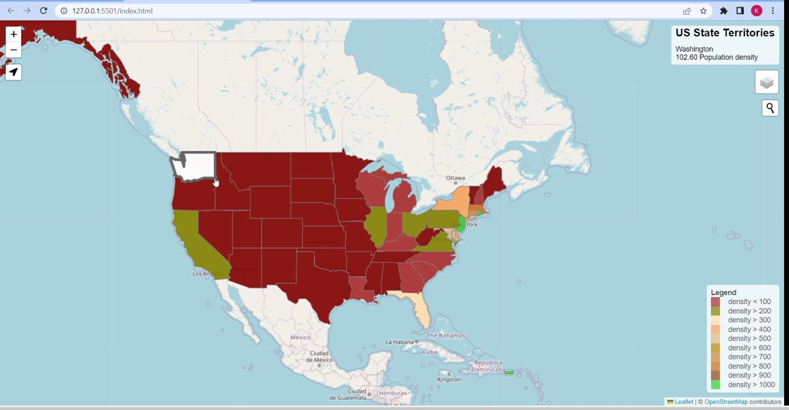

Thematic & Statistical Mapping
Choropleth, graduated symbol, density and categorical maps built on properly normalised data and classified honestly — for reports, tenders, publications and board packs.
Thematic mapping, suitability modelling, geoprocessing and publication-quality cartography — delivered remotely, in the software your team already uses.
Most organisations sitting on spatial data are not short of maps. They are short of answers: where should this go, what changed since last year, which sites qualify, what is exposed if the river rises.
We build the datasets and the models that turn that data into a defensible answer — and we document the method, so the result holds up when someone senior asks how you arrived at it.
Work is delivered in ArcGIS Pro, QGIS and PostGIS, with Python and R where automation or statistical rigour is needed. You receive the finished cartography and the underlying layers in an editable format, so your team can extend the work without coming back to us.

Choropleth, graduated symbol, density and categorical maps built on properly normalised data and classified honestly — for reports, tenders, publications and board packs.
Multi-criteria decision analysis combining terrain, access, land use, environmental and regulatory constraints into a weighted, documented and defensible ranking.
Cleaning, reprojecting, georeferencing and structuring messy spatial data into a documented PostGIS database your team can query, extend and trust.
If yours is not here, ask it directly — every enquiry is answered personally, usually the same working day.
Ask your questionPrimarily ArcGIS Pro, QGIS and PostGIS, with Python and R for automation and statistical analysis, and Google Earth Engine for large-scale satellite processing.
We deliver in whichever ecosystem your team already uses, so the outputs remain editable after handover rather than locking you into ours.
Yes, and it is usually the fastest and cheapest route. We routinely take messy shapefiles, spreadsheets with coordinates in inconsistent formats, scanned paper maps, CAD drawings and legacy databases, and turn them into a clean, correctly projected, documented spatial dataset.
Send a sample and we will tell you honestly what is usable and what is not before you commit.
Both, unless you specify otherwise. You receive the finished cartographic output and the underlying GIS layers in an editable format — typically SHP, GeoJSON, GeoPackage or a PostGIS dump.
We also document the method and any assumptions, so the analysis can be defended, audited or repeated later.
Yes. Attach your NDA to your first message and we will sign it before you send anything sensitive.
Client data is used only for the project it was supplied for, is not shared with third parties, and is never published as portfolio material without written permission.
Yes — a good share of our work is overflow capacity for teams that are already competent but short on hours during a busy period or a bid.
We can work to your existing style guides, layer naming conventions, templates and coordinate systems so the output is indistinguishable from work produced internally.
Describe it in plain language. Within 24 hours you will have a written approach, a timeline and a fixed price — free, and with no obligation to go ahead.
Typically answered the same working day · Nairobi, Kenya (EAT)